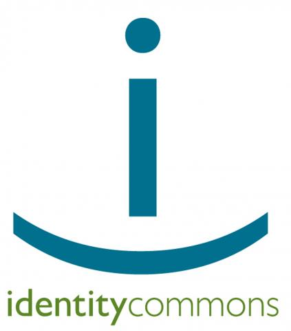
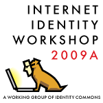

interoperability
ICF Board Endorses IC3 Proposal

The Information Card Foundation (ICF) has been affiliated with Identity Commons since ICF's founding in June of 2008. Identity Commons is currently a loose-knit affiliation of different groups and organizations working together to create an identity layer for the Internet. It is perhaps best-known for its semi-annual conference, Internet Identity Workshop (now known as “IIW”), which brings together a wide range of people active in the Internet identity community to forge the protocols, policies, and partnerships necessary to produce an identity layer serving all constituencies: people, for-profit companies, non-profit organizations, and governments.
The current Identity Commons is actually the second generation of an organization originally founded by Owen Davis and Andrew Nelson in 2002. That organization subsequently transformed itself in 2005 into the current Working Group structure in order to foster collaboration between a diverse set of groups that include legally incorporated entities such as the ICF, the OpenID Foundation, and XDI.org, as well as internal Identity Commons Working Groups that are not separate legal entities, such as IIW, OSIS, ID Legal, Project VRM, and Kids Online.
Although Identity Commons has always been a non-profit corporation, the second-generation entity has never raised funds beyond its modest operating expenses (less than $5000 per year). This past summer, interest grew in creating a third generation of Identity Commons that could serve as a much more robust “upside-down umbrella” organization for funding and coordinating work across the entire ecosystem of efforts on Internet identity, data sharing, and relationship management.
ICF Featured Events at Burton Catalyst 2010 San Diego
 The annual summer Catalyst conference put on by the Burton Group is happening again this coming week in San Diego. A large number of Information Card Foundation members and directors will be in attendance. Here is a list of all the events that are of particular interest to ICF members and others involved with open identity technologies:
The annual summer Catalyst conference put on by the Burton Group is happening again this coming week in San Diego. A large number of Information Card Foundation members and directors will be in attendance. Here is a list of all the events that are of particular interest to ICF members and others involved with open identity technologies:
ICF Participating in OASIS IMI Interop at 2010 RSA Conference
 ICF will be an active participant in the OASIS IMI Interop to be held next week at the 2010 RSA Conference at the Moscone Center in San Francisco. The Interop will focus on demonstrations of the GSA ICAM IMI 1.0 Profile for use of Information Cards to U.S. government identity assurance levels.
ICF will be an active participant in the OASIS IMI Interop to be held next week at the 2010 RSA Conference at the Moscone Center in San Francisco. The Interop will focus on demonstrations of the GSA ICAM IMI 1.0 Profile for use of Information Cards to U.S. government identity assurance levels.
Contributors to the ICF presence at the Interop include Avoco Secure, Azigo, the Province of British Columbia, Equifax, Meristic, Microsoft, Openinfocard, and PayPal. They will be demonstrating Information Cards, relying party sites, and selectors compatible with the GSA ICAM IMI 1.0 Profile.
The IMI Interop will be held in the OASIS booth (#2545) on the RSA show floor. The booth will be open:
- 6-8PM Monday March 1
- 11-6PM Tuesday March 2
- 11-6PM Wednesday March 3
- 11-3PM Thursday March 4
Currently IMI Interop presentations are scheduled every two hours during the day in the booth. Direct interop demonstrations will be going on continuously. We invite you to come by the booth and visit us.
ICF will also be participating in a major announcement about the establishment of new infrastructure for online identity assurance – watch for further information here.
Lastly, the ICF Board of Directors will hold a face-to-face meeting from 3-7PM on Thursday March 4 at SPUR, 654 Mission Street (two blocks from Moscone).
Avoco Secure Announces Universal Identity Broker
Avoco Secure today announced it will launch the first "universal identity broker", a new product call Open2Connect that will make it much easier and more seamless for users to access online resources such as websites, documents, etc. using any identification/authentication method, including username/password, Information Cards, OpenID®, X509 digital certificate, Windows Live® ID, SAML, etc.
The Open2Connect UIB system ensures that a user can utilise any preferred login method, as long as that method contains the information required by the site to allow access (called a "claim"). Examples of claims include names, email addresses, or account numbers. The UIB can also go a step further by controlling access to the web resource through associating levels of assurance with the login, for example specifying that the claim must originate from a specified source.
The whole login process is handled by the UIB: the user simply clicks on the login button as usual -- vital in retaining usability of websites. The UIB will then present the user with choices of login method from their preferred list -- showing only those that the website will accept (because they contain the correct claim). The communication between the login method, the identity provisioning site (as appropriate) and the website is all handled by the UIB.
Information Cards at Internet Identity Workshop Spring 2009
The Spring 2009 Internet Identity Workshop concluded three days of intensive discussion of key Internet identity technologies last week. Following an introduction to Information Cards on the first morning by ICF Executive Director Drummond Reed, sessions on Information Card technology were held throughout the week.
Mr. Reed and Kynetx CTO Phil Windley held two sessions on action cards, the new application of Information Card technology to augmented web browsing (for more details, see the ICF white paper, The Information Card Ecosystem). Mr. Windley demonstrated how an action card rule could be written to add a real-time Twitter search to a Google search results page. "With the Kynetx Rules Language (KRL), any Information Card can be used to share user context across two or more sites in ways that provide immediate user value", said Mr. Windley.
Mr. Windley also announced that Kynetx is starting a limited beta of its developer tools program. Interested developers should contact him directly.
The One and Only Internet Identity Workshop
There's only one IIW. I don't know of anything like it for any other industry. It is THE open space conference for the community - the most critical event to attend if you either want to know where Internet identity is going -- or change where it is going. The next one is May 18-20 at the Computer History Museum in Mountain View.

Early registration is especially important this year - register before April 1 to secure a special price.
The Information Card Foundation is one of the sponsors this year, and our members and contributors will be there in force, so we look forward to you joining us there.
ICF @ DIDW Sept 2008
At DIDW in 2007, the term 'user-centric' identity was called 'new school' identity. Kim Cameron introduced the term claims as a way of accurately generalizing the data fields on Information Cards. But the concept of Information Cards as a metaphor to wield the claims that others made about you was not the overarching meme at DIDW last year.
But at DIDW 2008, Information Cards and the Information Card Foundation have moved mainstream.
The Higgins Project, the basis for open source information card implementations demonstrated by Novell (The Bandit Project) Oracle, Parity, and IBM, has created an open source implementation of Information Card selectors compatible with Microsoft CardSpace. A SAML-plug-in for Higgins was built for Google. Where there used to be one organization (Liberty) promoting SAML, there are now a triumverate of organizations -- Liberty has been joined by the Open ID Foundation supporting Open ID and the Information Card Foundation supporting Information Cards. Thus the Venn of Identity diagram from Concordia's Eve Maler now has active established organizations in each sphere.
Examples of the impact Information Cards had on this conference: